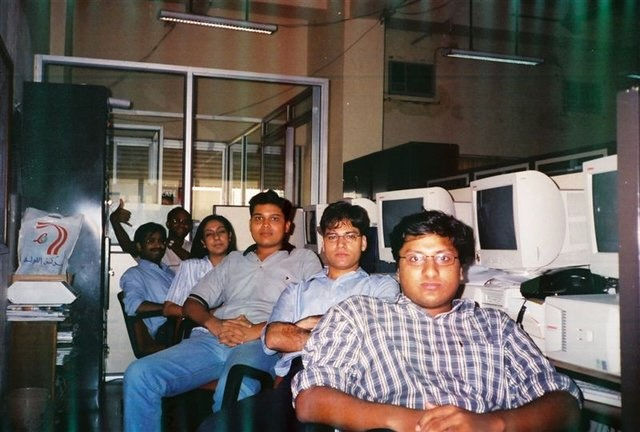
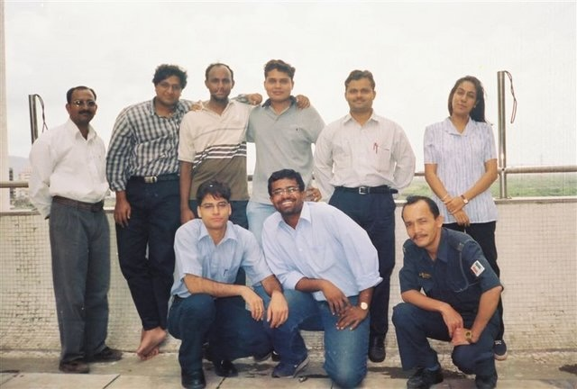

Vashi Days of NCST
Today I got a few old photos from Rahul. Luckily he had those pics which were taken at the NCST, New Bombay centre at Vashi, right above the Vashi railway station.
The Vashi tech-staff – Binoy, Jacob, Bhavana, Dharmesh, Pankaj, and Ripul. Subbu and Meghna are missing from the photo.

And here is a larger group on the terrace – Ramakant, Ripul, Binoy, Dharmesh, Suresh (visiting from the Juhu office that day), Bhavana, and sitting – Pankaj, Martin (also from Juhu), and one more colleague.

I used to come from Powai, Ripul from Bombay Central. Usually, we joined each other at Kurla while going to the office in the morning. In the evening, we used to leave the office at roughly 9:00 PM. This was the routine until we both shifted to Seawoods Complex.
I remember we used to eat Jacob's dabba (lunch box) for lunch and then used to go for Pops Jumbo Vada-Pav. Sometimes other places also, especially Alibaba for a Chinese treat. In the evening we used to eat at home until we shifted to Seawoods.
After shifting, the Seawoods team grew to six (Sasi, Joju, Pankaj, Ripul, Dharmesh, Prem) and then we decided to cook dinner ourselves. Sasi, Joju, and Prem were also the coaches for our team, and within a few days we became South Indian cooking experts.
Nice days.